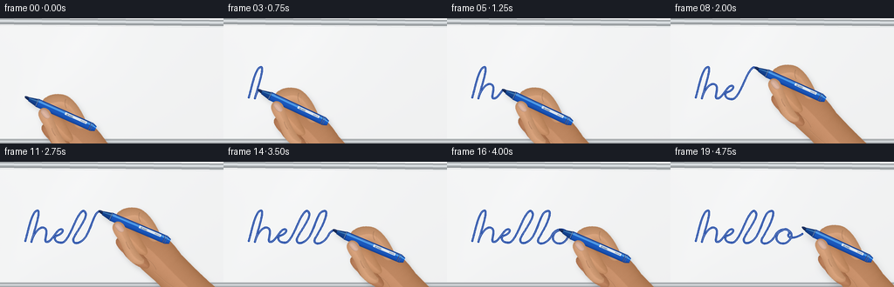
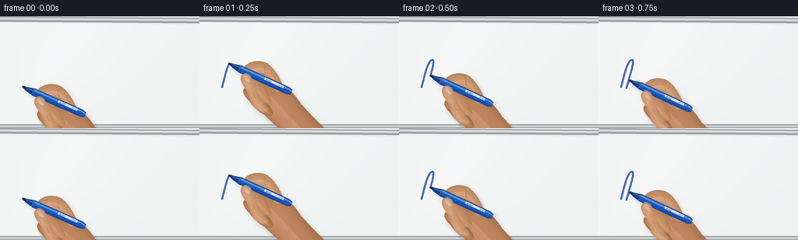

CODING AGENTS AS PIXEL WORLD MODELS
traex/GPT-6.1-Sol · phygen_032
点击播放 · 原生 RGB 像素
逐轮保存的候选
回放视频、检查图与代码变化。
每份候选均可单独播放。实际图片检查记录在下方工具轨迹中。
候选 01播放与检查图
点击播放 · 原生 RGB 像素


展开代码变化
--- 上一保存版本
+++ 本次保存版本
@@ -0,0 +1,289 @@
+"""Procedural RGB video: a blue dry-erase marker writing on a whiteboard.
+All surfaces, strokes, shadows and the hand are built locally with NumPy/Pillow.
+"""
+from pathlib import Path
+import json
+import math
+import numpy as np
+from PIL import Image, ImageDraw, ImageFilter
+from scipy.ndimage import distance_transform_edt, gaussian_filter
+import artifact_io
+
+ROOT = Path(__file__).resolve().parent
+SPEC = json.loads((ROOT / 'task_spec.json').read_text())
+W, H, N = SPEC['width'], SPEC['height'], SPEC['frames']
+S = 4
+UW, UH = W*S, H*S
+rng = np.random.default_rng(321)
+
+# The pen/hand is constructed in coordinates along and across the pen.
+UMIN, VMIN = -12, -40
+SW, SH = 176*S, 113*S
+Y, X = np.mgrid[:SH, :SW]
+U = X/S + UMIN
+V = Y/S + VMIN
+local_noise = gaussian_filter(rng.normal(size=(SH, SW)), 0.65)
+
+def xy(p):
+ return ((p[0]-UMIN)*S, (p[1]-VMIN)*S)
+
+def bezier(p0,p1,p2,p3,n=28):
+ t=np.linspace(0,1,n)[:,None]
+ return ((1-t)**3*np.array(p0)+3*(1-t)**2*t*np.array(p1)+3*(1-t)*t*t*np.array(p2)+t**3*np.array(p3))
+
+def contour(start, segments):
+ points=[start]; cur=start
+ for c1,c2,end in segments:
+ points.extend(bezier(cur,c1,c2,end)[1:].tolist()); cur=end
+ return points
+
+def mask_shape(points):
+ m=Image.new('L',(SW,SH)); ImageDraw.Draw(m).polygon([xy(p) for p in points],fill=255)
+ return m
+
+def skin(points, base=(206,151,112), bulge=4.0, warm=0):
+ m=mask_shape(points)
+ alpha=np.asarray(m)/255
+ d=distance_transform_edt(alpha)
+ dd=gaussian_filter(d,1.5)
+ gy,gx=np.gradient(dd)
+ rim=np.exp(-d/(S*bulge))
+ directional=np.clip((-gx*.25-gy*.6),-.6,.6)
+ shine=np.exp(-((V+9)/35)**2)*3
+ shading = -32*rim+14*directional+shine+local_noise*1.4
+ arr=np.empty((SH,SW,4),dtype=np.uint8)
+ for k in range(3):
+ arr[:,:,k]=np.clip(base[k]+shading*(1 if k==0 else .88)+warm*(k==0),0,255)
+ arr[:,:,3]=np.asarray(m)
+ return Image.fromarray(arr)
+
+def crease(layer, points, width=.4, opacity=75):
+ ink=Image.new('RGBA',(SW,SH))
+ dr=ImageDraw.Draw(ink)
+ dr.line([xy(p) for p in points], fill=(102,58,38,opacity),width=max(1,round(width*S)),joint='curve')
+ layer.alpha_composite(ink.filter(ImageFilter.GaussianBlur(.22*S)))
+ light=Image.new('RGBA',(SW,SH));d=ImageDraw.Draw(light)
+ d.line([xy((p[0],p[1]+.65)) for p in points],fill=(255,213,171,52),width=max(1,round(.35*S)),joint='curve')
+ layer.alpha_composite(light)
+
+sprite=Image.new('RGBA',(SW,SH))
+# Rounded back of the hand and the wrist, continuing off the right of the shot.
+palm=contour((56,-2),[
+ ((73,-8),(88,-2),(106,9)),
+ ((127,18),(151,27),(166,31)),
+ ((178,38),(178,66),(164,70)),
+ ((132,65),(112,58),(89,48)),
+ ((68,42),(49,34),(45,20)),
+ ((39,10),(45,2),(56,-2))])
+sprite.alpha_composite(skin(palm,(199,143,105),9))
+# Ring and little fingers, seen under the pen.
+ring=contour((49,20),[
+ ((41,13),(35,13),(32,19)),
+ ((28,25),(35,30),(44,33)),
+ ((53,39),(66,43),(76,39)),
+ ((84,32),(62,24),(49,20))])
+sprite.alpha_composite(skin(ring,(196,137,101),5))
+mid=contour((61,14),[
+ ((52,6),(44,3),(36,4)),
+ ((28,4),(24,10),(29,15)),
+ ((35,21),(46,25),(56,26)),
+ ((71,29),(75,22),(61,14))])
+sprite.alpha_composite(skin(mid,(211,154,114),5))
+crease(sprite,bezier((39,19),(44,21),(49,23),(54,24)),.4,70)
+crease(sprite,bezier((41,30),(49,32),(53,36),(62,37)),.45,65)
+# Index finger curls over the upper side of the shaft.
+index=contour((78,0),[
+ ((68,-10),(55,-20),(43,-21)),
+ ((35,-21),(25,-16),(22,-10)),
+ ((18,-6),(20,1),(26,3)),
+ ((31,5),(39,0),(42,-4)),
+ ((50,-7),(56,-1),(63,5)),
+ ((69,10),(75,8),(78,0))])
+sprite.alpha_composite(skin(index,(215,162,124),6))
+crease(sprite,bezier((43,-17),(43,-13),(45,-10),(48,-8)),.4,95)
+crease(sprite,bezier((47,-18),(46,-15),(48,-12),(50,-10)),.3,40)
+
+# The glossy blue marker. It tapers through the nose to the felt contact nib.
+def paint_pen():
+ im=Image.new('RGBA',(SW,SH)); draw=ImageDraw.Draw(im)
+ # Blue-black cut felt. Rounded contact at origin touches the board.
+ nib=contour((-.9,-.45),[
+ ((-.9,-1.25),(.4,-1.75),(1.5,-1.8)),
+ ((2.7,-2.0),(4.7,-2.0),(5.6,-1.75)),
+ ((6.0,-1.0),(6.0,1.6),(5.0,1.7)),
+ ((3.2,1.7),(1.0,1.1),(-.9,-.45))])
+ draw.polygon([xy(p) for p in nib],fill=(15,34,77,255))
+ draw.line([xy((.2,-.8)),xy((4.9,-1.0))],fill=(47,76,144,255),width=2)
+ # Molded neck / barrel as a shaded cylindrical surface.
+ radius=np.where(U<15, 2.4+(U-5)*.22, 5.0)
+ radius=np.where(U>83, 5-(U-83)*.40, radius)
+ valid=(U>=4.5)&(U<=88.0)&(abs(V)<radius)
+ q=np.clip(V/(radius+1e-6),-1,1)
+ bright=np.sqrt(np.maximum(0,1-q*q))
+ highlight=np.exp(-((q+.43)/.19)**2)
+ reflection=np.exp(-((q-.26)/.095)**2)*.14
+ arr=np.zeros((SH,SW,4),dtype=np.uint8)
+ neck=(U<16)
+ for k,(base,add,hi) in enumerate([(13,12,66),(46,41,91),(119,69,66)]):
+ c=base+add*bright+hi*highlight+25*reflection
+ c=np.where(neck,c*.76,c)
+ arr[:,:,k]=np.clip(c,0,255)
+ arr[:,:,3]=valid.astype(np.uint8)*255
+ im.alpha_composite(Image.fromarray(arr))
+ # Thin seams at the neck and at the rear cap.
+ for u in (14.4,80.7,83):
+ rad=4.55 if u<20 else 4.85
+ draw=ImageDraw.Draw(im)
+ draw.line([xy((u,-rad)),xy((u,rad))],fill=(8,32,87,170),width=2)
+ draw.line([xy((u+.45,-rad+.5)),xy((u+.45,rad-.5))],fill=(78,128,215,100),width=1)
+ # Light printed panel, a restrained realistic piece of barrel branding.
+ label=mask_shape([(49,-3.1),(76,-3.1),(76,-.4),(49,-.4)])
+ panel=Image.new('RGBA',(SW,SH),(218,229,239,255));panel.putalpha(label)
+ im.alpha_composite(panel)
+ dd=ImageDraw.Draw(im)
+ dd.text(xy((51,-2.95)), 'BOARD', fill=(27,64,105,235),stroke_width=0)
+ for u in np.arange(69,75,.9):
+ dd.line([xy((u,-2.5)),xy((u,-1))],fill=(62,92,131,220),width=1)
+ # Narrow straight specular edge reflects the room light.
+ dd.line([xy((16,-3.5)),xy((79,-3.5))], fill=(132,177,245,125),width=1)
+ return im
+sprite.alpha_composite(paint_pen())
+# Thumb folds across the grip in the foreground.
+thumb=contour((69,31),[
+ ((61,28),(50,20),(43,13)),
+ ((37,8),(34,3),(29,2)),
+ ((23,1),(20,5),(21,10)),
+ ((22,15),(30,19),(36,23)),
+ ((42,28),(48,37),(57,39)),
+ ((65,40),(73,37),(69,31))])
+sprite.alpha_composite(skin(thumb,(222,168,130),5.5))
+# A short visible thumbnail with a softly lit, translucent cuticle.
+nail=contour((23.7,4.3),[
+ ((26.1,2.5),(29.9,4.1),(33.0,6.8)),
+ ((35.2,8.3),(35.5,10.6),(32.4,12.0)),
+ ((30.2,13.1),(25.7,10.3),(23.6,8.9)),
+ ((22.5,7.4),(22.3,5.3),(23.7,4.3))])
+sprite.alpha_composite(skin(nail,(225,184,164),2))
+crease(sprite,bezier((24,8.5),(26,11),(30,13),(32.4,12.2)),.32,75)
+crease(sprite,bezier((42,20),(44,23),(47,25),(49,26)),.45,80)
+crease(sprite,bezier((45,19),(47,22),(50,24),(52,25)),.25,38)
+crease(sprite,bezier((67,29),(75,28),(82,32),(86,36)),.45,49)
+crease(sprite,bezier((85,39),(95,42),(103,46),(115,47)),.36,35)
+
+# Smooth enamel board with soft window reflections and narrow aluminium rails.
+y,x=np.mgrid[:UH,:UW]; xx=x/S; yy=y/S
+light=2.0*np.exp(-((xx-86)/96)**2-((yy-48)/90)**2)
+board_base=243.5+light-.015*yy-.006*xx
+reflection=1.7*np.exp(-((xx+yy*.8-114)/30)**2)
+noise=gaussian_filter(rng.normal(size=(UH,UW)),.65)*.16
+bg=np.stack([board_base+reflection+noise,board_base+reflection+noise+.9,board_base+reflection+noise+1.2],axis=2)
+bg=np.clip(bg,0,255).astype(np.uint8)
+board=Image.fromarray(bg).convert('RGBA')
+bd=ImageDraw.Draw(board)
+# Very slightly skewed outer aluminium top border.
+for row in range(7*S):
+ val=int(151+76*np.exp(-((row/S-2.9)/1.5)**2))
+ bd.line([(0,row),(UW,row+2*S)],fill=(val,min(255,val+5),min(255,val+8),255),width=1)
+bd.line([(0,8*S),(UW,10*S)],fill=(201,207,209,255),width=2)
+# The frame's lower rail just enters the edge of the close-up.
+for row in range(139*S,UH):
+ val=int(165+55*np.exp(-((row/S-141.5)/.95)**2))
+ bd.line([(0,row),(UW,row)],fill=(val,val+4,val+7,255),width=1)
+bd.line([(0,138.5*S),(UW,138.5*S)],fill=(197,201,202,255),width=2)
+
+# One connected cursive pen path: 'hello'. No pre-existing marks.
+start=(29,91)
+segments=[
+ ((32,81),(36,60),(41,57)),
+ ((49,51),(40,76),(36,92)),
+ ((39,81),(47,72),(52,77)),
+ ((56,81),(48,94),(55,92)),
+ ((58,91),(61,86),(65,81)),
+ ((71,73),(77,81),(65,85)),
+ ((61,86),(62,93),(70,93)),
+ ((75,94),(80,83),(85,72)),
+ ((91,58),(96,53),(98,59)),
+ ((101,64),(85,84),(84,89)),
+ ((83,97),(95,94),(100,83)),
+ ((106,72),(108,58),(114,57)),
+ ((123,53),(114,74),(105,88)),
+ ((101,96),(113,97),(120,85)),
+ ((122,79),(130,76),(135,79)),
+ ((143,83),(136,94),(129,94)),
+ ((119,94),(119,82),(128,79)),
+ ((133,75),(138,80),(135,84)),
+ ((134,89),(144,88),(151,83)),
+]
+path=contour(start,segments)
+path=np.array(path)
+dist=np.r_[0,np.cumsum(np.linalg.norm(np.diff(path,axis=0),axis=1))]
+length=dist[-1]
+
+def path_until(f):
+ target=f*length
+ k=np.searchsorted(dist,target,side='right')-1
+ k=int(np.clip(k,0,len(path)-2))
+ frac=np.clip((target-dist[k])/(dist[k+1]-dist[k]),0,1)
+ end=path[k]*(1-frac)+path[k+1]*frac
+ return np.vstack([path[:k+1],end]),end
+
+def warp_local(im,tip,angle, lift=0):
+ c,s=math.cos(angle),math.sin(angle)
+ # Output pixel -> the moving hand's local construction coordinates.
+ tx,ty=tip[0]*S, (tip[1]-lift)*S
+ matrix=(c,s,-c*tx-s*ty-UMIN*S,-s,c,s*tx-c*ty-VMIN*S)
+ return im.transform((UW,UH),Image.Transform.AFFINE,matrix,Image.Resampling.BICUBIC)
+
+frames=[]
+for i in range(N):
+ # Nineteen positions through the continuous writing stroke, then a lift.
+ progress=min(1.0,i/17)
+ # A little natural velocity variation, while remaining monotonically forward.
+ if 0<progress<1:
+ progress=progress+.013*math.sin(progress*math.pi*4)
+ stroke,tip=path_until(progress)
+ frame=board.copy()
+ ink=Image.new('RGBA',(UW,UH))
+ dr=ImageDraw.Draw(ink)
+ if len(stroke)>1 and i>0:
+ pts=[tuple(p*S) for p in stroke]
+ dr.line(pts,fill=(19,66,168,255),width=round(2.05*S),joint='curve')
+ for p in stroke:
+ # Rounded joins: ink remains fixed on the smooth surface as the tip moves.
+ px,py=p*S;r=1.03*S
+ dr.ellipse((px-r,py-r,px+r,py+r),fill=(20,66,166,255))
+ # A thinner rich-blue center, with slight ink-density variation.
+ dr.line(pts,fill=(24,62,151,155),width=round(.66*S),joint='curve')
+ frame.alpha_composite(ink)
+ angle=math.radians(24+1.3*math.sin(i*.37))
+ lift=0 if i<=17 else (i-17)*3.5
+ moved=warp_local(sprite,tip,angle,lift)
+ # The hand is above the board; its soft cast shadow follows the tool.
+ alpha=moved.getchannel('A')
+ shadow=Image.new('RGBA',(UW,UH),(48,50,54,0))
+ shifted=Image.new('L',(UW,UH))
+ shifted.paste(alpha,(3*S,(4+lift*.25).__round__()*S))
+ shifted=shifted.filter(ImageFilter.GaussianBlur((2.8+lift*.18)*S))
+ shifted=shifted.point(lambda a:round(a*.20))
+ shadow.putalpha(shifted)
+ frame.alpha_composite(shadow)
+ # The nib's contact shadow stays small and attached to the writing point.
+ if lift==0:
+ contact=Image.new('RGBA',(UW,UH));cd=ImageDraw.Draw(contact)
+ tx,ty=tip*S
+ cd.ellipse((tx-.7*S,ty-.35*S,tx+2.0*S,ty+1.25*S),fill=(26,33,52,100))
+ frame.alpha_composite(contact.filter(ImageFilter.GaussianBlur(.35*S)))
+ frame.alpha_composite(moved)
+ frame=frame.convert('RGB').resize((W,H),Image.Resampling.LANCZOS)
+ frames.append(np.asarray(frame,dtype=np.uint8))
+frames=np.stack(frames)
+artifact_io.save(frames,ROOT)
+
+# A conventional video is included alongside the required lossless RGB artifact.
+try:
+ import imageio.v2 as imageio
+ imageio.mimwrite(ROOT/'video.mp4',frames,fps=SPEC['fps'],codec='libx264',quality=9,macro_block_size=1,
+ ffmpeg_params=['-pix_fmt','yuv420p','-movflags','+faststart'])
+except (ImportError,RuntimeError,OSError) as e:
+ print('Optional MP4 unavailable:',e)
+print('Saved',frames.shape,frames.dtype,'to',ROOT)
可观测工具轨迹
实际执行的命令与返回图片。
命令 1exit 0
/bin/bash -lc 'ls -la && cat prompt.txt && cat GENERATION_RULES.md && cat task_spec.json'
命令 2exit 0
/bin/bash -lc "cat artifact_io.py && python - <<'PY'
import numpy, PIL
print('numpy',numpy.__version__)
print('PIL',PIL.__version__)
PY"命令 3exit 0
/bin/bash -lc "python - <<'PY' import importlib.util for m in ['scipy','cv2','imageio','imageio_ffmpeg']: print(m, bool(importlib.util.find_spec(m))) PY"
命令 4exit 0
/bin/bash -lc "cat > generate.py <<'PY'
\"\"\"Procedural RGB video: a blue dry-erase marker writing on a whiteboard.
All surfaces, strokes, shadows and the hand are built locally with NumPy/Pillow.
\"\"\"
from pathlib import Path
import json
import math
import numpy as np
from PIL import Image, ImageDraw, ImageFilter
from scipy.ndimage import distance_transform_edt, gaussian_filter
import artifact_io
ROOT = Path(__file__).resolve().parent
SPEC = json.loads((ROOT / 'task_spec.json').read_text())
W, H, N = SPEC['width'], SPEC['height'], SPEC['frames']
S = 4
UW, UH = W*S, H*S
rng = np.random.default_rng(321)
# The pen/hand is constructed in coordinates along and across the pen.
UMIN, VMIN = -12, -40
SW, SH = 176*S, 113*S
Y, X = np.mgrid[:SH, :SW]
U = X/S + UMIN
V = Y/S + VMIN
local_noise = gaussian_filter(rng.normal(size=(SH, SW)), 0.65)
def xy(p):
return ((p[0]-UMIN)*S, (p[1]-VMIN)*S)
def bezier(p0,p1,p2,p3,n=28):
t=np.linspace(0,1,n)[:,None]
return ((1-t)**3*np.array(p0)+3*(1-t)**2*t*np.array(p1)+3*(1-t)*t*t*np.array(p2)+t**3*np.array(p3))
def contour(start, segments):
points=[start]; cur=start
for c1,c2,end in segments:
points.extend(bezier(cur,c1,c2,end)[1:].tolist()); cur=end
return points
def mask_shape(points):
m=Image.new('L',(SW,SH)); ImageDraw.Draw(m).polygon([xy(p) for p in points],fill=255)
return m
def skin(points, base=(206,151,112), bulge=4.0, warm=0):
m=mask_shape(points)
alpha=np.asarray(m)/255
d=distance_transform_edt(alpha)
dd=gaussian_filter(d,1.5)
gy,gx=np.gradient(dd)
rim=np.exp(-d/(S*bulge))
directional=np.clip((-gx*.25-gy*.6),-.6,.6)
shine=np.exp(-((V+9)/35)**2)*3
shading = -32*rim+14*directional+shine+local_noise*1.4
arr=np.empty((SH,SW,4),dtype=np.uint8)
for k in range(3):
arr[:,:,k]=np.clip(base[k]+shading*(1 if k==0 else .88)+warm*(k==0),0,255)
arr[:,:,3]=np.asarray(m)
return Image.fromarray(arr)
def crease(layer, points, width=.4, opacity=75):
ink=Image.new('RGBA',(SW,SH))
dr=ImageDraw.Draw(ink)
dr.line([xy(p) for p in points], fill=(102,58,38,opacity),width=max(1,round(width*S)),joint='curve')
layer.alpha_composite(ink.filter(ImageFilter.GaussianBlur(.22*S)))
light=Image.new('RGBA',(SW,SH));d=ImageDraw.Draw(light)
d.line([xy((p[0],p[1]+.65)) for p in points],fill=(255,213,171,52),width=max(1,round(.35*S)),joint='curve')
layer.alpha_composite(light)
sprite=Image.new('RGBA',(SW,SH))
# Rounded back of the hand and the wrist, continuing off the right of the shot.
palm=contour((56,-2),[
((73,-8),(88,-2),(106,9)),
((127,18),(151,27),(166,31)),
((178,38),(178,66),(164,70)),
((132,65),(112,58),(89,48)),
((68,42),(49,34),(45,20)),
((39,10),(45,2),(56,-2))])
sprite.alpha_composite(skin(palm,(199,143,105),9))
# Ring and little fingers, seen under the pen.
ring=contour((49,20),[
((41,13),(35,13),(32,19)),
((28,25),(35,30),(44,33)),
((53,39),(66,43),(76,39)),
((84,32),(62,24),(49,20))])
sprite.alpha_composite(skin(ring,(196,137,101),5))
mid=contour((61,14),[
((52,6),(44,3),(36,4)),
((28,4),(24,10),(29,15)),
((35,21),(46,25),(56,26)),
((71,29),(75,22),(61,14))])
sprite.alpha_composite(skin(mid,(211,154,114),5))
crease(sprite,bezier((39,19),(44,21),(49,23),(54,24)),.4,70)
crease(sprite,bezier((41,30),(49,32),(53,36),(62,37)),.45,65)
# Index finger curls over the upper side of the shaft.
index=contour((78,0),[
((68,-10),(55,-20),(43,-21)),
((35,-21),(25,-16),(22,-10)),
((18,-6),(20,1),(26,3)),
((31,5),(39,0),(42,-4)),
((50,-7),(56,-1),(63,5)),
((69,10),(75,8),(78,0))])
sprite.alpha_composite(skin(index,(215,162,124),6))
crease(sprite,bezier((43,-17),(43,-13),(45,-10),(48,-8)),.4,95)
crease(sprite,bezier((47,-18),(46,-15),(48,-12),(50,-10)),.3,40)
# The glossy blue marker. It tapers through the nose to the felt contact nib.
def paint_pen():
im=Image.new('RGBA',(SW,SH)); draw=ImageDraw.Draw(im)
# Blue-black cut felt. Rounded contact at origin touches the board.
nib=contour((-.9,-.45),[
((-.9,-1.25),(.4,-1.75),(1.5,-1.8)),
((2.7,-2.0),(4.7,-2.0),(5.6,-1.75)),
((6.0,-1.0),(6.0,1.6),(5.0,1.7)),
((3.2,1.7),(1.0,1.1),(-.9,-.45))])
draw.polygon([xy(p) for p in nib],fill=(15,34,77,255))
draw.line([xy((.2,-.8)),xy((4.9,-1.0))],fill=(47,76,144,255),width=2)
# Molded neck / barrel as a shaded cylindrical surface.
radius=np.where(U<15, 2.4+(U-5)*.22, 5.0)
radius=np.where(U>83, 5-(U-83)*.40, radius)
valid=(U>=4.5)&(U<=88.0)&(abs(V)<radius)
q=np.clip(V/(radius+1e-6),-1,1)
bright=np.sqrt(np.maximum(0,1-q*q))
highlight=np.exp(-((q+.43)/.19)**2)
reflection=np.exp(-((q-.26)/.095)**2)*.14
arr=np.zeros((SH,SW,4),dtype=np.uint8)
neck=(U<16)
for k,(base,add,hi) in enumerate([(13,12,66),(46,41,91),(119,69,66)]):
c=base+add*bright+hi*highlight+25*reflection
c=np.where(neck,c*.76,c)
arr[:,:,k]=np.clip(c,0,255)
arr[:,:,3]=valid.astype(np.uint8)*255
im.alpha_composite(Image.fromarray(arr))
# Thin seams at the neck and at the rear cap.
for u in (14.4,80.7,83):
rad=4.55 if u<20 else 4.85
draw=ImageDraw.Draw(im)
draw.line([xy((u,-rad)),xy((u,rad))],fill=(8,32,87,170),width=2)
draw.line([xy((u+.45,-rad+.5)),xy((u+.45,rad-.5))],fill=(78,128,215,100),width=1)
# Light printed panel, a restrained realistic piece of barrel branding.
label=mask_shape([(49,-3.1),(76,-3.1),(76,-.4),(49,-.4)])
panel=Image.new('RGBA',(SW,SH),(218,229,239,255));panel.putalpha(label)
im.alpha_composite(panel)
dd=ImageDraw.Draw(im)
dd.text(xy((51,-2.95)), 'BOARD', fill=(27,64,105,235),stroke_width=0)
for u in np.arange(69,75,.9):
dd.line([xy((u,-2.5)),xy((u,-1))],fill=(62,92,131,220),width=1)
# Narrow straight specular edge reflects the room light.
dd.line([xy((16,-3.5)),xy((79,-3.5))], fill=(132,177,245,125),width=1)
return im
sprite.alpha_composite(paint_pen())
# Thumb folds across the grip in the foreground.
thumb=contour((69,31),[
((61,28),(50,20),(43,13)),
((37,8),(34,3),(29,2)),
((23,1),(20,5),(21,10)),
((22,15),(30,19),(36,23)),
((42,28),(48,37),(57,39)),
((65,40),(73,37),(69,31))])
sprite.alpha_composite(skin(thumb,(222,168,130),5.5))
# A short visible thumbnail with a softly lit, translucent cuticle.
nail=contour((23.7,4.3),[
((26.1,2.5),(29.9,4.1),(33.0,6.8)),
((35.2,8.3),(35.5,10.6),(32.4,12.0)),
((30.2,13.1),(25.7,10.3),(23.6,8.9)),
((22.5,7.4),(22.3,5.3),(23.7,4.3))])
sprite.alpha_composite(skin(nail,(225,184,164),2))
crease(sprite,bezier((24,8.5),(26,11),(30,13),(32.4,12.2)),.32,75)
crease(sprite,bezier((42,20),(44,23),(47,25),(49,26)),.45,80)
crease(sprite,bezier((45,19),(47,22),(50,24),(52,25)),.25,38)
crease(sprite,bezier((67,29),(75,28),(82,32),(86,36)),.45,49)
crease(sprite,bezier((85,39),(95,42),(103,46),(115,47)),.36,35)
# Smooth enamel board with soft window reflections and narrow aluminium rails.
y,x=np.mgrid[:UH,:UW]; xx=x/S; yy=y/S
light=2.0*np.exp(-((xx-86)/96)**2-((yy-48)/90)**2)
board_base=243.5+light-.015*yy-.006*xx
reflection=1.7*np.exp(-((xx+yy*.8-114)/30)**2)
noise=gaussian_filter(rng.normal(size=(UH,UW)),.65)*.16
bg=np.stack([board_base+reflection+noise,board_base+reflection+noise+.9,board_base+reflection+noise+1.2],axis=2)
bg=np.clip(bg,0,255).astype(np.uint8)
board=Image.fromarray(bg).convert('RGBA')
bd=ImageDraw.Draw(board)
# Very slightly skewed outer aluminium top border.
for row in range(7*S):
val=int(151+76*np.exp(-((row/S-2.9)/1.5)**2))
bd.line([(0,row),(UW,row+2*S)],fill=(val,min(255,val+5),min(255,val+8),255),width=1)
bd.line([(0,8*S),(UW,10*S)],fill=(201,207,209,255),width=2)
# The frame's lower rail just enters the edge of the close-up.
for row in range(139*S,UH):
val=int(165+55*np.exp(-((row/S-141.5)/.95)**2))
bd.line([(0,row),(UW,row)],fill=(val,val+4,val+7,255),width=1)
bd.line([(0,138.5*S),(UW,138.5*S)],fill=(197,201,202,255),width=2)
# One connected cursive pen path: 'hello'. No pre-existing marks.
start=(29,91)
segments=[
((32,81),(36,60),(41,57)),
((49,51),(40,76),(36,92)),
((39,81),(47,72),(52,77)),
((56,81),(48,94),(55,92)),
((58,91),(61,86),(65,81)),
((71,73),(77,81),(65,85)),
((61,86),(62,93),(70,93)),
((75,94),(80,83),(85,72)),
((91,58),(96,53),(98,59)),
((101,64),(85,84),(84,89)),
((83,97),(95,94),(100,83)),
((106,72),(108,58),(114,57)),
((123,53),(114,74),(105,88)),
((101,96),(113,97),(120,85)),
((122,79),(130,76),(135,79)),
((143,83),(136,94),(129,94)),
((119,94),(119,82),(128,79)),
((133,75),(138,80),(135,84)),
((134,89),(144,88),(151,83)),
]
path=contour(start,segments)
path=np.array(path)
dist=np.r_[0,np.cumsum(np.linalg.norm(np.diff(path,axis=0),axis=1))]
length=dist[-1]
def path_until(f):
target=f*length
k=np.searchsorted(dist,target,side='right')-1
k=int(np.clip(k,0,len(path)-2))
frac=np.clip((target-dist[k])/(dist[k+1]-dist[k]),0,1)
end=path[k]*(1-frac)+path[k+1]*frac
return np.vstack([path[:k+1],end]),end
def warp_local(im,tip,angle, lift=0):
c,s=math.cos(angle),math.sin(angle)
# Output pixel -> the moving hand's local construction coordinates.
tx,ty=tip[0]*S, (tip[1]-lift)*S
matrix=(c,s,-c*tx-s*ty-UMIN*S,-s,c,s*tx-c*ty-VMIN*S)
return im.transform((UW,UH),Image.Transform.AFFINE,matrix,Image.Resampling.BICUBIC)
frames=[]
for i in range(N):
# Nineteen positions through the continuous writing stroke, then a lift.
progress=min(1.0,i/17)
# A little natural velocity variation, while remaining monotonically forward.
if 0<progress<1:
progress=progress+.013*math.sin(progress*math.pi*4)
stroke,tip=path_until(progress)
frame=board.copy()
ink=Image.new('RGBA',(UW,UH))
dr=ImageDraw.Draw(ink)
if len(stroke)>1 and i>0:
pts=[tuple(p*S) for p in stroke]
dr.line(pts,fill=(19,66,168,255),width=round(2.05*S),joint='curve')
for p in stroke:
# Rounded joins: ink remains fixed on the smooth surface as the tip moves.
px,py=p*S;r=1.03*S
dr.ellipse((px-r,py-r,px+r,py+r),fill=(20,66,166,255))
# A thinner rich-blue center, with slight ink-density variation.
dr.line(pts,fill=(24,62,151,155),width=round(.66*S),joint='curve')
frame.alpha_composite(ink)
angle=math.radians(24+1.3*math.sin(i*.37))
lift=0 if i<=17 else (i-17)*3.5
moved=warp_local(sprite,tip,angle,lift)
# The hand is above the board; its soft cast shadow follows the tool.
alpha=moved.getchannel('A')
shadow=Image.new('RGBA',(UW,UH),(48,50,54,0))
shifted=Image.new('L',(UW,UH))
shifted.paste(alpha,(3*S,(4+lift*.25).__round__()*S))
shifted=shifted.filter(ImageFilter.GaussianBlur((2.8+lift*.18)*S))
shifted=shifted.point(lambda a:round(a*.20))
shadow.putalpha(shifted)
frame.alpha_composite(shadow)
# The nib's contact shadow stays small and attached to the writing point.
if lift==0:
contact=Image.new('RGBA',(UW,UH));cd=ImageDraw.Draw(contact)
tx,ty=tip*S
cd.ellipse((tx-.7*S,ty-.35*S,tx+2.0*S,ty+1.25*S),fill=(26,33,52,100))
frame.alpha_composite(contact.filter(ImageFilter.GaussianBlur(.35*S)))
frame.alpha_composite(moved)
frame=frame.convert('RGB').resize((W,H),Image.Resampling.LANCZOS)
frames.append(np.asarray(frame,dtype=np.uint8))
frames=np.stack(frames)
artifact_io.save(frames,ROOT)
# A conventional video is included alongside the required lossless RGB artifact.
try:
import imageio.v2 as imageio
imageio.mimwrite(ROOT/'video.mp4',frames,fps=SPEC['fps'],codec='libx264',quality=9,macro_block_size=1,
ffmpeg_params=['-pix_fmt','yuv420p','-movflags','+faststart'])
except (ImportError,RuntimeError,OSError) as e:
print('Optional MP4 unavailable:',e)
print('Saved',frames.shape,frames.dtype,'to',ROOT)
PY
python generate.py"命令 5exit 0
/bin/bash -lc "python - <<'PY'
from pathlib import Path
import numpy as np
from PIL import Image
p=Path('.')
a=np.load(p/'pixels.npz')['pixels']
assert a.shape==(144,256,20)
assert len(list((p/'frames').glob('*.png')))==20
for file in ['generate.py','pixels.npz','index.html','inspection.png','transition_check.png','video.mp4']:
print(file,(p/file).stat().st_size)
for i in [0,5,10,17,19]:
im=np.asarray(Image.open(p/'frames'/f'{i:02d}.png'))
mask=(im[:,:,2].astype(float)>im[:,:,0]+45)&(im[:,:,0]<80)&(np.indices(im.shape[:2])[0]<105)
print('Frame',i,'blue pixels in writing region:',int(mask.sum()))
PY"保存候选 1 份；完成命令 5 次；可验证图片返回 0 张。原始 API 响应与完整日志保留在本地。